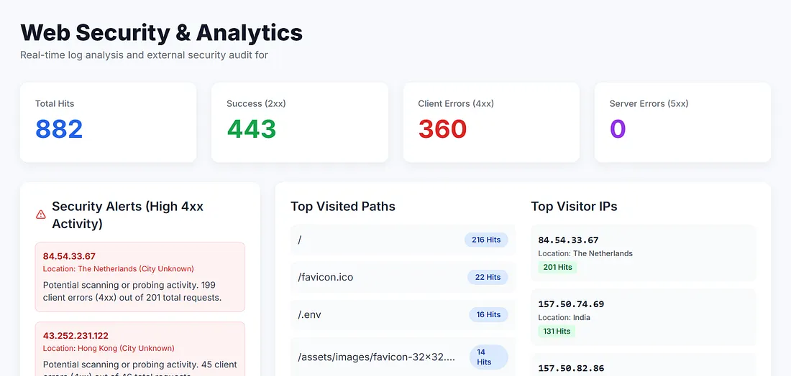

DEC 21, 2025 • 6 MIN READ
Beyond the “Deploy” Button
Who is Actually Visiting My Site (and are they friendly?)
Why Every Site Owner Needs a Security & Analytics Dashboard
You’ve finally done it. You spent weeks — maybe months — coding. You’ve mastered your database connections, perfected your Java or Python logic, and maybe even used AI to help you polish those tricky design layouts or fix that one bug that kept you up until 2 AM. You finally hit that “Deploy” button, and your site is live.
Whether it’s a professional portfolio designed to land your dream job, a personal blog for your hobbies, or even a small website for a local family-run restaurant, it’s an incredible feeling. You send the link to your friends, post it on LinkedIn, or print it on your business cards.
But shortly after the initial excitement fades, a big, quiet question pops up: “Now what?”
As a student or a self-taught developer, it’s easy to focus 100% of your energy on the building part. But most of us have very little knowledge about what happens to our “digital child” after it’s out in the wild. Who is visiting? Are they real people interested in your work, or just automated programs scanning for a way in? Is the site actually secure, or is there a back door wide open that you didn’t notice because you were too busy fixing the header font?
I realized that while we are taught how to code, we often aren’t taught how to “watch” our work. That’s exactly why I built the Web Security & Analytics Dashboard.

The “Guest Book” You Can’t Read
When you host a website on a platform like AWS, a private server, or even a home computer, the server acts like a 24/7 security guard. Every time someone — or something — comes to your door, the guard writes down a note. These notes are saved in a hidden file called an access.log.
For most people, this file is a total mystery. If you were to open it, you’d see thousands of lines of messy text, strange numbers, and dates that look like absolute gibberish. However, this file is actually a goldmine of information. It tells you exactly who came by, what time they arrived, and which “room” of your website they tried to enter.
My project takes that messy, unreadable “black box” and turns it into a clear, visual story. Instead of looking at code, you’re looking at a map and a simple list of insights that anyone can understand.
Why This Helps You (No Matter Your Site Type)
The goal of this project was to make security and analytics accessible with almost zero effort on your part. I wanted to create a tool that speaks “human” rather than “computer.” Here is how it helps different people in different situations:
1. For the Job-Seeking Student (Portfolios)
Imagine you’ve just applied for a job at a big tech company in London. You sent your portfolio link to the hiring manager. Now you’re sitting at home, refreshing your email every five minutes.
The Insight:
My dashboard uses “GeoIP” data to show you exactly where your visitors are coming from. If you open your dashboard and see, “Hey, I got three hits from a building in London today!” you suddenly have proof that your resume actually made it to the right desk. It’s a huge confidence booster and a way to validate that your networking is actually working.
2. For the Small Business Owner (Restaurant or Shop Sites)
If you run a site for a local cafe, a boutique, or a neighborhood shop, your website is often the first “handshake” you have with a customer. Nothing looks more unprofessional than a hungry customer clicking on your “Today’s Menu” link and seeing a cold, “404 Page Not Found” error.
The Insight:
We call these “broken links.” The dashboard highlights your most frequent errors. Instead of waiting for a customer to complain, you can find these broken paths and fix them in minutes. It makes sure your digital storefront stays as polished as your physical one.
3. For the Personal Blogger
You might think, “My blog is just about my weekend hikes; nobody would want to hack that.” Unfortunately, the internet is full of automated bots that don’t care what your content is. They roam the web 24/7, “knocking on the doors” of every site they find, looking for easy ways in — like trying to find an /admin page or a hidden configuration file.
The Insight:
My dashboard detects what I call “Security Bursts.” If one single computer tries to access 50 non-existent pages in ten seconds, it’s a bot trying to find a hole. The dashboard flags this behavior immediately. It lets you know that someone is testing your locks, so you can block that specific visitor before they ever find a real weakness.
Security Made Simple: The “External Audit”
Even if your code is perfect, the “house” your code lives in (the server) might be set up poorly. I added a feature that performs an “External Audit” on your site. Think of this as a friend walking around your house and checking if you accidentally left the windows unlocked or the back door open.
It checks for something called HTTP Security Headers. Think of these as the specific types of locks on your front door. One might prevent hackers from “pretending” to be your site, while another prevents them from injecting hidden buttons that steal information. If your site is missing a “CSP” or “HSTS” header, the dashboard doesn’t just give you an error code — it tells you exactly what is missing and gives you a clear path to fixing it.
Set It and Forget It (The Power of Automation)
I know you’re busy. I didn’t want this to be another chore you have to remember to do every day. I wanted it to feel like magic. To do this, I used a tool called scp (Secure Copy Protocol) to automate the whole thing.
Here is how the “magic” works behind the scenes:
- The Secure Courier: The dashboard uses
scpas a secure courier to reach out to your remote server and pull down the latest notes from the security guard. - The Intelligent Reader: It uses a trick called idempotency. This is just a fancy way of saying the script has a “bookmark.” It remembers where it stopped reading last time, so it only looks at the new lines. This keeps things incredibly fast, even if your site has been live for years.
- The Instant Update: It takes those new notes, updates your charts, maps, and alerts instantly.
Whenever you open your local dashboard and hit refresh, you are seeing the most current “pulse” of your live website. You don’t have to be a server expert to know exactly what is happening.
Closing Thoughts
Building a website is just the first chapter of the story. Understanding how that website lives, breathes, and survives in the wild is what separates a student from a professional engineer. This project taught me that logs aren’t just boring text files; they are the heartbeat of your server.
By listening to that heartbeat, we can make the web a safer, faster, and better-functioning place for everyone. Whether you’re showing off your code to a recruiter or showing off your menu to a customer, you deserve to know that your digital home is safe.
Update: I’m finishing up the documentation, and I will be updating this blog with the GitHub repository link very shortly! You’ll be able to download the code, follow a simple setup guide, and try it out on your own projects. Stay tuned!